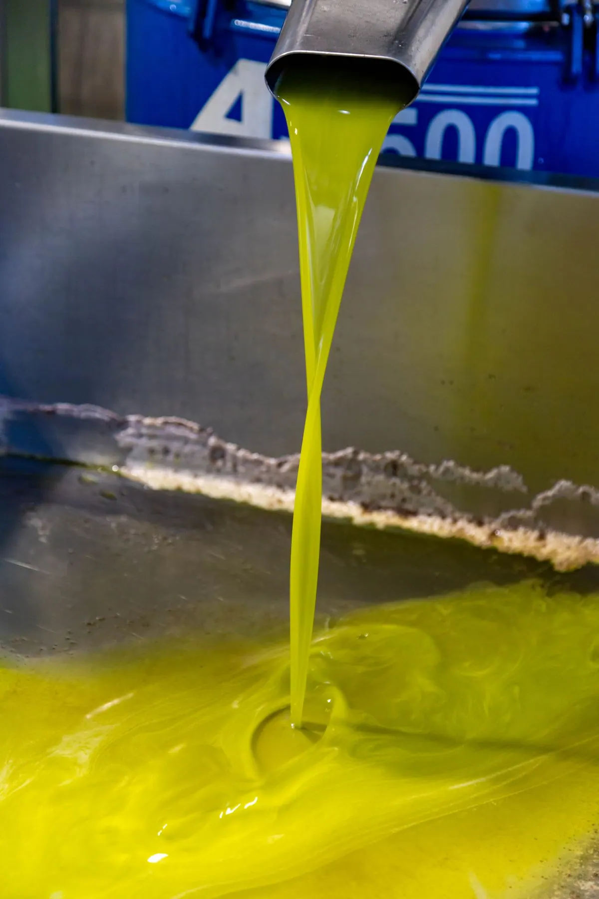
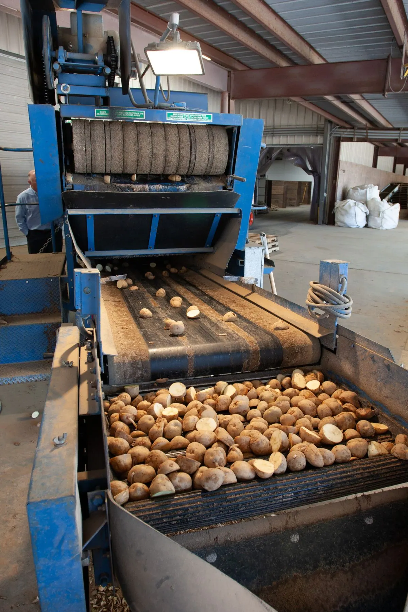
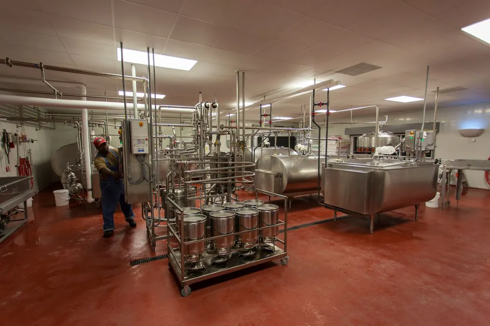
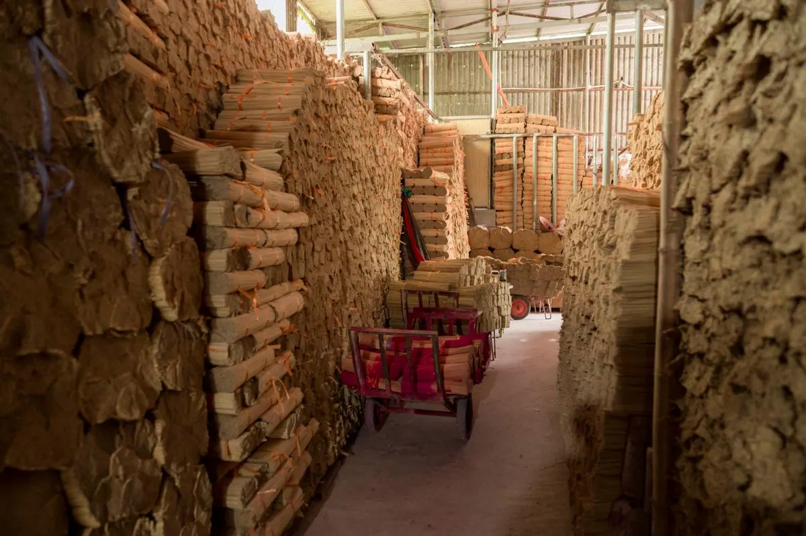
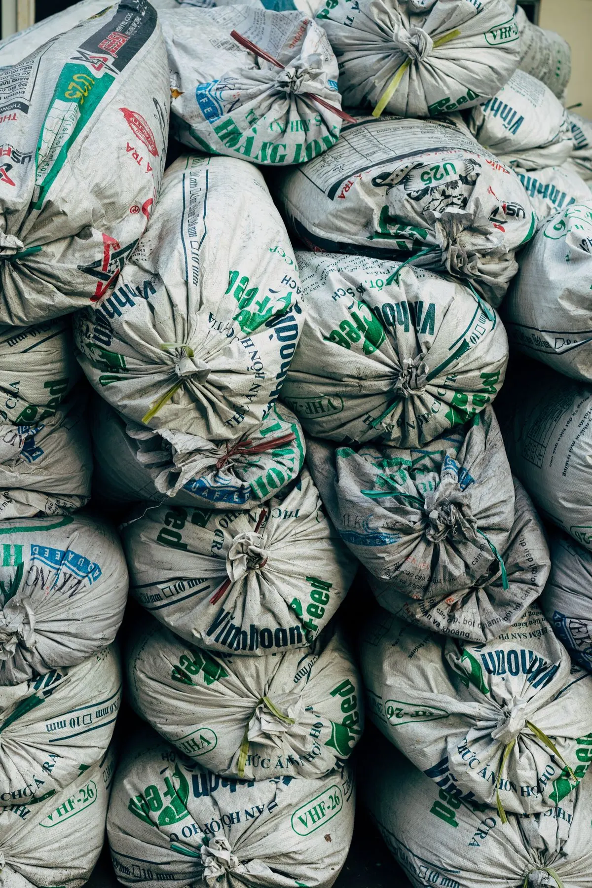
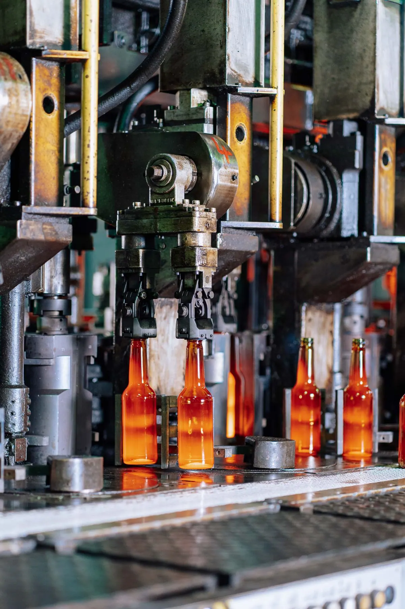
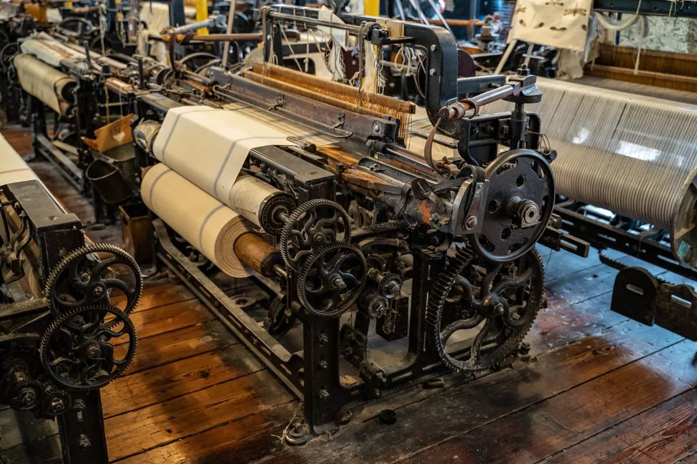
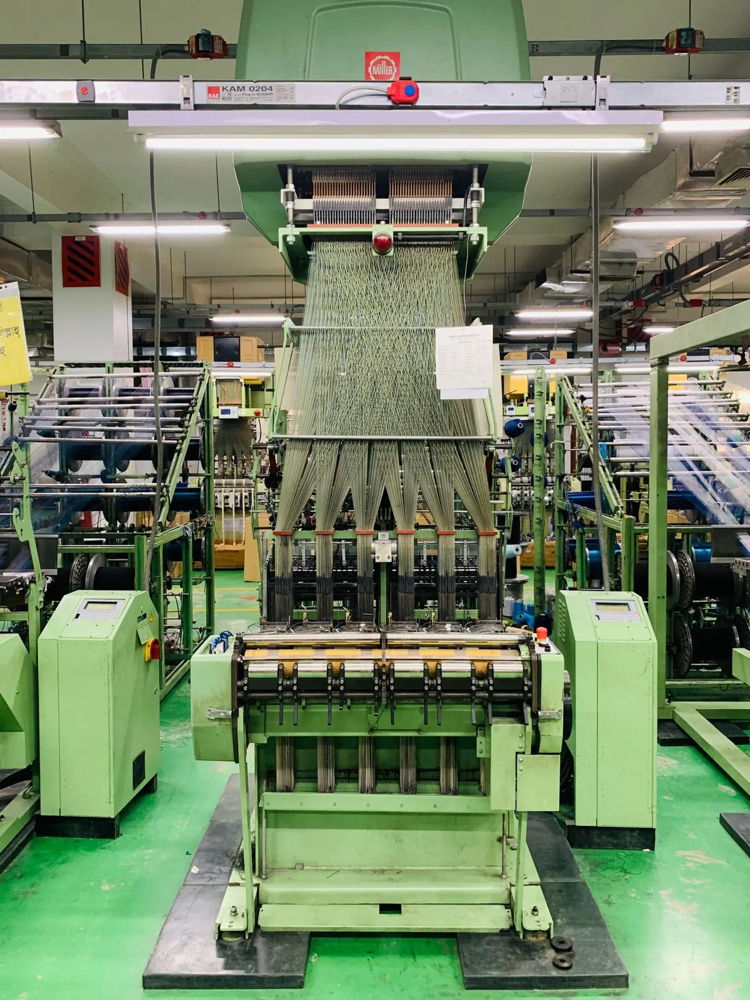

Hollow, solid & paving brick production line
Presses and cures concrete or cement bricks, hollow blocks and paving stones.
Request a QuoteEquipment
Whatever the machine, if it is made in China, we can find, vet and commission it — examples below, not a fixed inventory.
We source against your brief and specification, worldwide. These are common types of production line, not listings of specific verified units — tell us the machine, your site and the destination and we will quote the specification, capacity and lead time.
No matches. Tell us what you need instead — we source things that aren’t on this page too.
Brick, board, profile and ceramic lines for builders and building-materials manufacturers.
Presses and cures concrete or cement bricks, hollow blocks and paving stones.
Request a Quote
Makes plasterboard: mixing, forming between paper liners, drying and cutting.
Request a Quote
Extrudes aluminium billet into window, door and structural profiles.
Request a Quote
Casts, glazes and fires ceramic tableware and sanitaryware.
Request a QuoteMilling, oil, feed and food-processing lines for farms, mills and food brands.

Mixes and presses feed ingredients into pellets for poultry, fish and livestock.
Request a Quote
Cleans, degerms and mills maize into flour and grits.
Request a Quote
Hulls, whitens and grades paddy into milled rice.
Request a Quote
Presses, filters and refines vegetable and seed oils.
Request a Quote
Washes, cuts and dries fruit and vegetables for packing.
Request a Quote
Processes milk into cheese, from curding to pressing.
Request a QuotePackaging, labelling and print lines for branded goods.

Cuts, prints and folds corrugated boxes.
Request a Quote
Prints film, paper and bags using flexographic plates.
Request a Quote
Weighs, fills and seals powders such as flour, milk and spice.
Request a Quote
Weaves and converts polypropylene into woven sacks and bags.
Request a QuoteBlowing, moulding and recycling lines for plastic goods.

Blow-moulds PET preforms into drinks and water bottles.
Request a Quote
Injection-moulds buckets, basins and household plastics.
Request a Quote
Injection-moulds plastic parts from household goods to crates.
Request a Quote
Washes, shreds and pelletises waste plastic.
Request a QuoteGarment, knitting and weaving equipment.

Cutting, sewing and finishing machines for a garment workshop.
Request a Quote
Looms and preparation machines that weave fabric.
Request a Quote
Knits socks on automatic circular machines.
Request a Quote
A free 30-minute call. If it is not a fit, we say so.